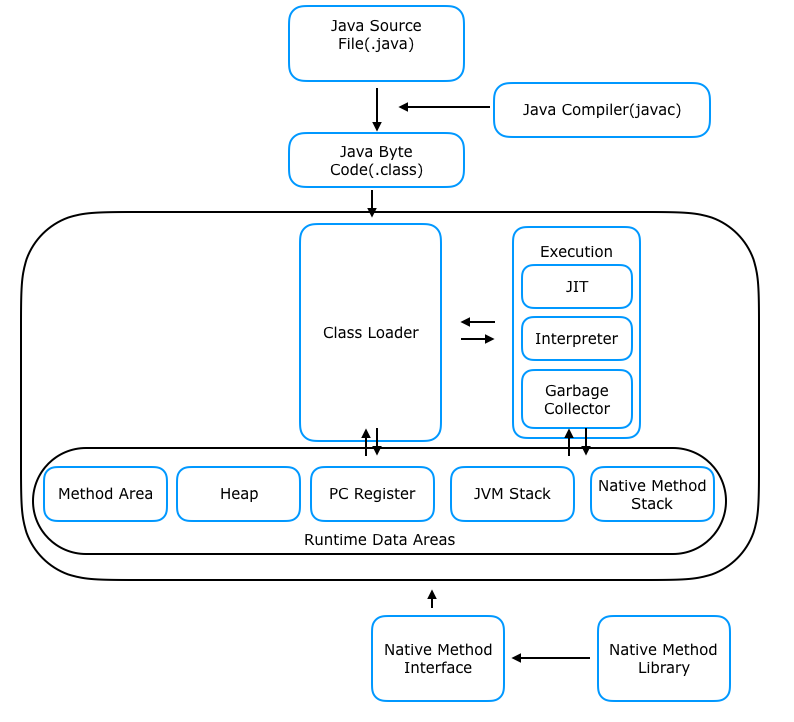

자바 코드를 직접 실행하는 게 아니라, 바이트코드(.class 파일)를 해석하고 실행하는 역할을 한다.
⇒ 즉, OS에 독립적으로 동작할 수 있도록 하는 핵심기.
JVM의 동작 과정
1. Java 소스 코드(.java) 작성
- 개발자가 Java 언어로 작성한 코드.
2. 컴파일 (.class 파일 생성)
javac(Java Compiler)가.java파일을 바이트코드(.class)로 변환.
3. JVM이 바이트코드 실행
- OS와 상관없이 바이트코드를 실행할 수 있도록 해석 (인터프리팅 or JIT 컴파일)
-
굳이 왜 바이트 코드?
- Java의 핵심 철학은 "Write Once, Run Anywhere" (한 번 작성하면 어디서든 실행할 수 있다)이다.
- 즉, Windows, Mac, Linux 등 어떤 운영체제에서도 동일한 코드가 실행될 수 있어야 한다.
👉 그런데 기계어(어셈블리 코드)는 CPU나 OS마다 다름
👉 바이트코드는 JVM 위에서 실행되므로, OS/CPU의 영향을 받지 않음
4. OS에 맞게 실행
- JVM이 OS와 상호작용하며 프로그램을 실행.
JVM의 구조도

1. JVM이 프로그램 실행을 위해 OS로부터 메모리를 할당받음
- Java 프로그램이 실행되면 JVM 프로세스가 생성되고, 운영체제(OS)로부터 Heap, Stack, Method Area 등 필요한 메모리를 할당받음.
- Method Area — 클래스 정보와 static 변수 등이 저장되는 영역
2. Java 소스 코드 컴파일 (Javac) → 바이트코드 생성
- Java 컴파일러(Javac)가
.java파일을 읽고.class바이트코드 파일로 변환함.
3. 클래스 로더 (Class Loader) → JVM 메모리로 로드
- 클래스 파일을 JVM의 메모리(Runtime Data Area)에 올려서 실행할 준비를 한다.
- 이때, 로딩 → 링킹 → 초기화 과정을 진행한다.
4. 실행 엔진 (Execution Engine) → 바이트코드 해석 및 실행
- 인터프리터 방식 (Interpreter) — 바이트코드를 한 줄씩 해석하며 실행 (속도가 느림)
- JIT (Just-In-Time) 컴파일러 방식 — 자주 실행되는 코드를 기계어로 변환하여 캐싱하고, 다음 실행부터 빠르게 실행